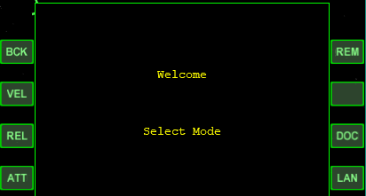

PursuitMFD 月面基地への自動着陸
PursuitMFDのオートパイロットによる自動着陸について解説します。
注意
地球のような濃い大気のある天体では、自動着陸はできません。
準備
あらかじめ、宇宙船を着陸目標の上空を通る軌道に乗せておく。
デルタグライダーの場合は、Gを押してランディングギアを出しておく。
Laindingプログラムを開く
MFDでPursuitMFDを開く。
LANボタンをクリックして、Landing（自動着陸）プログラムを開く。

着陸目標を設定する
Target欄に何も表示されていない場合は、TGTをクリック。
着陸したい基地などの名前を入力してEnterを押す。
PADをクリックして、使用する着陸パッドの番号を入力する。
| MAN | 緯度経度を直接入力(Manual)する |
| ELV | 着陸目標からの高度(Elevation)を指定する |
| INV | 後ろ向き(Inverse)に着陸する |
| GPH | グラフ(Graph)の表示を切り替える |
| ENG | 使用するエンジンを切り替える |
| BRK | 着陸時のホイールブレーキを有効／無効にする |
自動着陸を実行する
着陸目標を設定したら、HLD(Hold)ボタンをクリック。
全自動で着陸が実行される。
自動着陸中のタイムワープは10倍までに制限すること。
着陸の最終段階ではタイムワープを解除したほうがよい。
機体が完全に静止したら、オートパイロットは自動的に解除される。
着陸の最終段階でHLDをクリックすると、現在の高度と速度を維持する。
もう一度HLDをクリックすると、オートパイロットは完全に解除される。